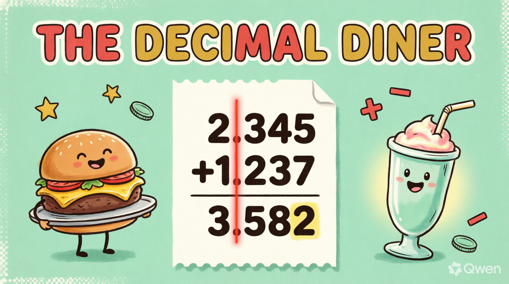

Watch this video and write down the 5 SECRET DIGITS that pop up on screen — then type them to unlock the interactive lesson, answer the questions, and earn ⭐ stars!
10 seconds until the diner opens…
WELCOME TO THE DECIMAL DINER!
Mission: Add It Up! 🍔
Add and subtract decimals with decimal parts up to 3 decimal places — the diner way!
🧾 STACK IT: line up the decimal points before computing!
➕➖ ADD & SUBTRACT up to 3 decimal places — carries & borrows included!
✅ FILL empty seats with zeros & drop the point straight down!

WARM-UP, SOUS-CHEF!
Same Smoothie, Three Labels!
🥤0.5
=
🥤0.50
=
🥤0.500
Different labels, SAME smoothie — zeros on the right never change the value!
zeros fill empty seatscolumns stay honestup to 3 decimal places!
Placeholder zeros are our secret ingredient for perfect adding and subtracting!
UNIT 1 🧾
Stack It Straight — Points in a Line!
✘ crooked — last digits lined
3.4
+0.215
✔ straight — points lined
3.4
+0.215
line up the decimal points — tenths under tenths, hundredths under hundredths!
points first, alwaysnever stack by last digitsevery seat matches its place!
PRACTICE 🧾 Q1/5 • FILL THE SEATS
Written with 3 decimal places, 3.4 becomes…?
PRACTICE 🧾 Q2/5 • FILL THE SEATS
Written with 3 decimal places, 7 becomes…?
PRACTICE 🧾 Q3/5 • FILL THE SEATS
Written with 3 decimal places, 0.25 becomes…?
PRACTICE 🧾 Q4/5 • FILL THE SEATS
Stacking 4.5 + 0.125 — what must line up vertically?
PRACTICE 🧾 Q5/5 • FILL THE SEATS
Written with 3 decimal places, 12.08 becomes…?
UNIT 2 🪑
Fill the Empty Seats — Placeholder Zeros!
3.400➜3.400
zeros fly into the empty hundredths & thousandths seats — value unchanged!
3.4 = 3.40 = 3.400same value, full seatscolumns stay honest!
PRACTICE ➕ Q1/5 • ADD IT
1.234 + 0.321 = ?
PRACTICE ➕ Q2/5 • ADD IT
2.5 + 0.125 = ?
PRACTICE ➕ Q3/5 • ADD IT
0.75 + 0.255 = ?
PRACTICE ➕ Q4/5 • ADD IT
3.08 + 0.9 = ?
PRACTICE ➕ Q5/5 • ADD IT
0.045 + 0.06 = ?
UNIT 3 ➕
Add Column by Column — Right to Left!
12.345+1.2373.582
5+7=12 → write 2, carry 1 — sweep right to left → 3.582!
2.345 + 1.237➜ column sweep ➜3.582 ✔
Carries cross the seats just like whole numbers — the point never moves the columns!
PRACTICE ➖ Q1/5 • SUBTRACT IT
4.5 − 1.235 = ?
PRACTICE ➖ Q2/5 • SUBTRACT IT
6.789 − 2.34 = ?
PRACTICE ➖ Q3/5 • SUBTRACT IT
9 − 0.125 = ?
PRACTICE ➖ Q4/5 • SUBTRACT IT
5.06 − 0.4 = ?
PRACTICE ➖ Q5/5 • SUBTRACT IT
0.9 − 0.455 = ?
UNIT 4 ➖
Borrow Across Seats — Chain Reaction!
9105.200−2.1453.055
fill seats first: 5.200 — then borrow down the chain → 3.055!
5.2 − 2.145➜ 5.200 − 2.145 ➜3.055 ✔
Borrow chains cross the decimal point just like everywhere else — keep the chain going!
PRACTICE 🍔 Q1/5 • DINER WORD PROBLEMS
A milkshake uses 0.375 L of milk and 0.25 L of cream. How many liters in all?
PRACTICE 🍔 Q2/5 • DINER WORD PROBLEMS
A 2.5 m ribbon is cut by 0.755 m. How much is left?
PRACTICE 🍔 Q3/5 • DINER WORD PROBLEMS
The chef mixes 1.08 kg of flour and 0.9 kg of sugar. Total mass?
PRACTICE 🍔 Q4/5 • DINER WORD PROBLEMS
A jug holds 3.408 L of juice; 0.6 L is served. How much is left?
PRACTICE 🍔 Q5/5 • DINER WORD PROBLEMS
Two toppings weigh 0.045 kg and 0.09 kg. Combined weight?
UNIT 5 ✅
Drop the Point — Then Check!
3.582≈ 3 ✔ REASONABLE!
the point drops STRAIGHT DOWN from the stacked points → 3.582!
2.345 ≈ 21.237 ≈ 1about 3 → 3.582 is reasonable!
Never serve an answer without tasting it first — estimate, then check!
PRACTICE ⭐ Q1/5 • CARRY & BORROW BOSSES
0.999 + 0.001 = ?
PRACTICE ⭐ Q2/5 • CARRY & BORROW BOSSES
5.2 − 2.145 = ?
PRACTICE ⭐ Q3/5 • CARRY & BORROW BOSSES
12.345 + 7.655 = ?
PRACTICE ⭐ Q4/5 • CARRY & BORROW BOSSES
10 − 0.007 = ?
PRACTICE ⭐ Q5/5 • CARRY & BORROW BOSSES
3.505 − 1.5 = ?
DINER HAZARDS! ⚠️
Don't Burn the Order! 🔥
Hazard 1 • Crooked Stack
Line up the DECIMAL POINTS, never the last digits! 3.4 + 0.215 stacks as 3.400 over 0.215.
Hazard 2 • Empty Seats
Fill placeholder zeros FIRST or your borrows grab the wrong seat: 5.2 becomes 5.200 before subtracting 2.145!
Hazard 3 • Lost Point
The answer's point drops STRAIGHT down: 2.345 + 1.237 = 3.582 — never 3582!
FINAL QUIZ 🧠 Q1/10
2.45 + 0.555 = ?
FINAL QUIZ 🧠 Q2/10
7.02 − 3.416 = ?
FINAL QUIZ 🧠 Q3/10
FIRST step when adding 4.7 + 0.089?
FINAL QUIZ 🧠 Q4/10
0.6 + 0.6 + 0.6 = ?
FINAL QUIZ 🧠 Q5/10
8.125 − 8.025 = ?
FINAL QUIZ 🧠 Q6/10
15.004 + 0.996 = ?
FINAL QUIZ 🧠 Q7/10
5.3 − 0.045 = ?
FINAL QUIZ 🧠 Q8/10
0.008 + 0.02 = ?
FINAL QUIZ 🧠 Q9/10
The diner uses 0.85 kg of rice in the morning and 0.675 kg in the afternoon. How many kg in all?
FINAL QUIZ 🧠 Q10/10
6 − 2.75 = ?
DINER COMPLETE 🔔
1 • stack the points2 • fill empty seats3 • add/subtract right→left4 • drop the point5 • estimate-check!